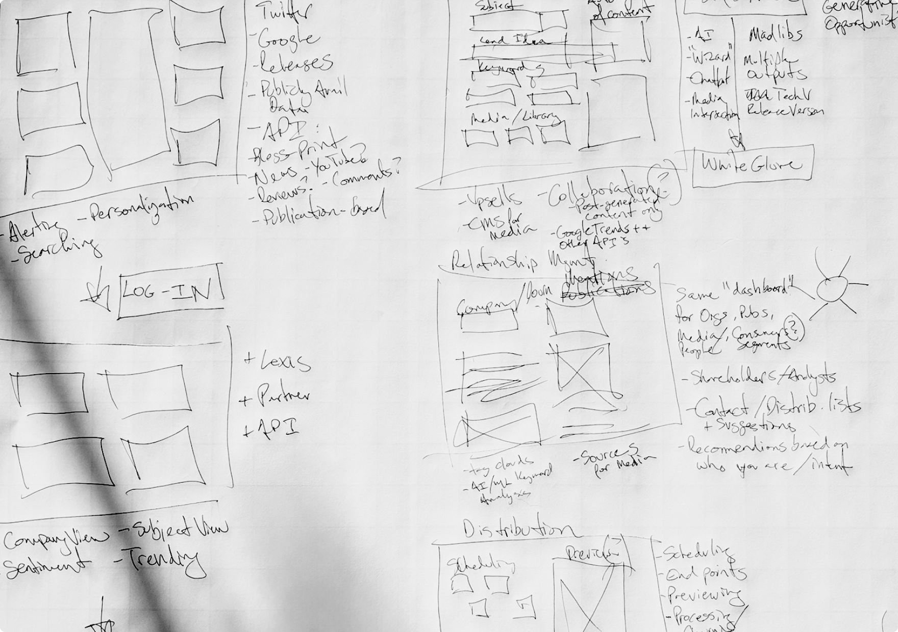

Business Wire
Rewiring PR for the AI Age: Business Wire's Strategic Transformation
Ethnographic Research
Competitive & Market Analysis
Business Design
North Star Development
Brand Strategy
Product Strategy & Concept Development
Customer Journey Mapping
Product Design
UI/UX Design
Rewiring PR for the AI Age: Business Wire's Strategic Transformation
Even industry giants must adapt or risk obsolescence. Business Wire, a stalwart in press release distribution for over half a century, found itself at such a crossroads. The challenge wasn't just to keep pace with change, but to redefine public relations in the digital age.
"The media ecosystem has undergone a seismic shift," explains Kevin Farnham, one of Kei's partners. "We're witnessing a fragmentation of channels, a democratization of content creation, and a fundamental change in how information is consumed and shared. For a company like Business Wire to remain relevant, we needed to reimagine not just their product offer, but their entire role in the communications landscape."
Recognizing the magnitude of this challenge, Business Wire's CEO engaged us to lead a comprehensive transformation effort. Our mission was clear but daunting: evolve Business Wire from a traditional PR service provider into a modern communications platform – one that could serve as the connective tissue between companies, publications, and the emerging class of digital influencers.
Our approach began with an extensive research phase with a diverse array of stakeholders:
The research revealed a complex web of needs and pain points. As one PR manager candidly shared, "I wish there was a way to really measure the quality of the coverage we are generating. We have very crude tools." We heard this over and over again across various roles, highlighting a critical gap in the market for more sophisticated, integrated communication tools.
Key insights emerged:
01.
Democratization of Media
Brands now have direct channels to connect with end-users, bypassing traditional gatekeepers.
02.
Content Arbitrage
There's a growing need to fine-tune outreach efforts, connecting the right content with the right publishers.
03.
Mobile-First Mentality
Content must be designed with a mobile-first approach to meet the needs of on-the-go professionals.
04.
Noise and Filtering
There's an opportunity to match content creators with journalists based on shared interests, cutting through the information overload.
05.
Building Stronger Connections
Brands and PR professionals want to build meaningful relationships with journalists without overwhelming them.
Armed with these insights, our team embarked on a synthesis process. We created detailed persona profiles, mapped out current workflows, and identified key opportunity areas. This led to the development of a comprehensive strategy document that outlined:
A new vision for Business Wire as a central hub in the modern communications ecosystem
A modular platform architecture that could adapt to diverse organizational needs
AI-driven features to enhance content creation, distribution, and measurement
A roadmap for organizational change to support this new direction
One of the key strategic shifts was moving from a transactional model of press release distribution to becoming a strategic partner in the entire communications lifecycle. This meant reimagining Business Wire's role at every stage, from content creation to measurement and refinement.
With the strategy in place, we moved into a phase of rapid prototyping and co-design. Over several weeks, we created a series of high-fidelity mockups and interactive prototypes, each iteration refined through feedback from Business Wire's team and potential users.
The proposed platform was designed around five core modules:
01.
Discovery
A set of AI-driven tools to identify messaging needs and trends. This feature would analyze market data, social media trends, and industry news to suggest timely and relevant messaging opportunities.
02.
Content Creation
A collaborative editing module with real-time AI suggestions. This would include features like SEO optimization, tone analysis, and even the ability to generate multiple versions of content tailored for different channels or audiences.
03.
Relationship Management
A comprehensive system bringing together all stakeholders. This module would act as a CRM specifically designed for communications professionals, tracking interactions, preferences, and engagement history with journalists, influencers, and other key contacts.
04.
Message Distribution
An intelligent system for targeted content delivery. This would go beyond simple mass distribution, using AI to match content with the most relevant and receptive audiences, and optimizing send times for maximum impact.
05.
Measurement & Refinement
Advanced analytics for nuanced performance tracking and optimization. This module would provide real-time insights on content performance, sentiment analysis, and even predictive modeling for future campaigns.

To bring this vision to life, we produced:
Detailed user journey maps for each key persona, illustrating how different professionals would interact with the platform throughout their workday
A comprehensive service blueprint outlining the entire communications ecosystem and how Business Wire's new platform would integrate with existing tools and workflows
Interactive prototypes demonstrating key user flows, from creating a press release to analyzing its performance
A product roadmap outlining feature rollout across multiple phases, balancing quick wins with longer-term transformative capabilities
To ensure the viability of our proposed solution, Business Wire sourced an independent market research study. The results were positive:
84% expressed strong interest in the platform
Ideal price point: $3,000 per month91% showed significant interest
Willingness to pay: $3,500 per month81% were excited about the platform's potential
Suggested price for a limited version: $25-$30 per monthThese figures didn't just validate the concept; they revealed a substantial new revenue opportunity for Business Wire. The pricing strategy, derived from this research, suggested a tiered approach that could cater to different market segments while maximizing revenue potential.
Moreover, the study highlighted the platform's perceived uniqueness in the market:
of corporate enterprise professionals
of PR agency professionals
of content influencers rated
the concept as unique compared to other known services.
This market validation was a pivotal moment in the project. It transformed the platform from a theoretical concept into a viable business opportunity with clear market demand and pricing benchmarks.
Our work went beyond product design. We helped Business Wire envision a new business
model, shifting from transactional press release distribution to becoming an
indispensable partner in the entire communications lifecycle.
We proposed a tiered service structure:
This approach allowed Business Wire to cater to a wide range of client needs, from basic self-service to full-scale content production and strategy. It also opened up new revenue streams and positioned Business Wire as a more strategic partner to its clients.
While full implementation is ongoing, our work has already catalyzed significant changes within Business Wire:
We provided Business Wire with:
A detailed implementation roadmap, breaking down the project into manageable phases
Recommendations for organizational restructuring to support the new platform
Guidelines for change management to help transition the company culture
Strategies for communicating the new vision to clients and partners
This project represents more than a product overhaul; it's a reimagining of how companies
communicate in the digital age. By creating a platform that brings together all
stakeholders in the communications ecosystem, Business Wire is poised to lead the
evolution of the industry.
As we look to the future, several key trends emerge that Business Wire is now
well-positioned to address:
The continued rise of AI in content creation and distribution
Increasing demand for real-time, data-driven decision making in communications
The growing importance of influencer relationships in corporate messaging
The need for more sophisticated, multi-channel measurement tools
The Business Wire project exemplifies our approach to large-scale transformation. By combining deep industry knowledge with human-centered design and strategic foresight, we helped reimagine not just a product, but an entire communications ecosystem. This work demonstrates the power of bridging high-level thinking with practical realities - moving from concept to actionable strategy. As Business Wire begins implementation, they're embarking on a path that could significantly influence the future of corporate communications. It's a reminder that even in established industries, there's always room for innovation when you're willing to question fundamental assumptions and envision new possibilities.